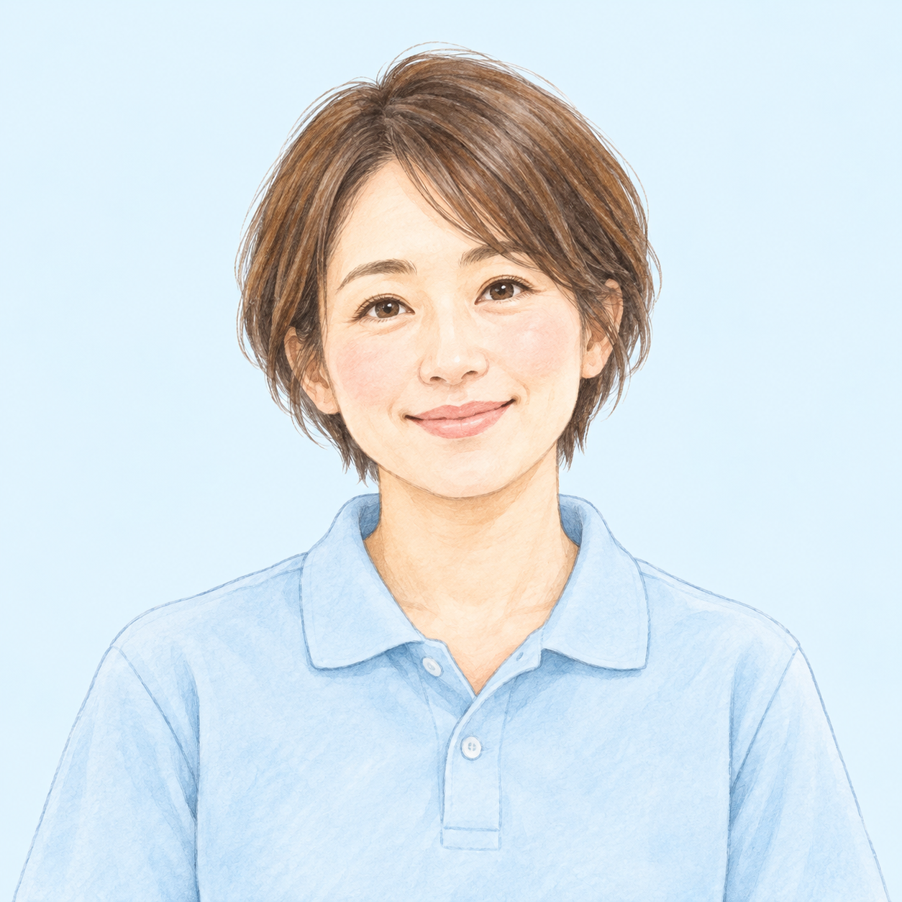
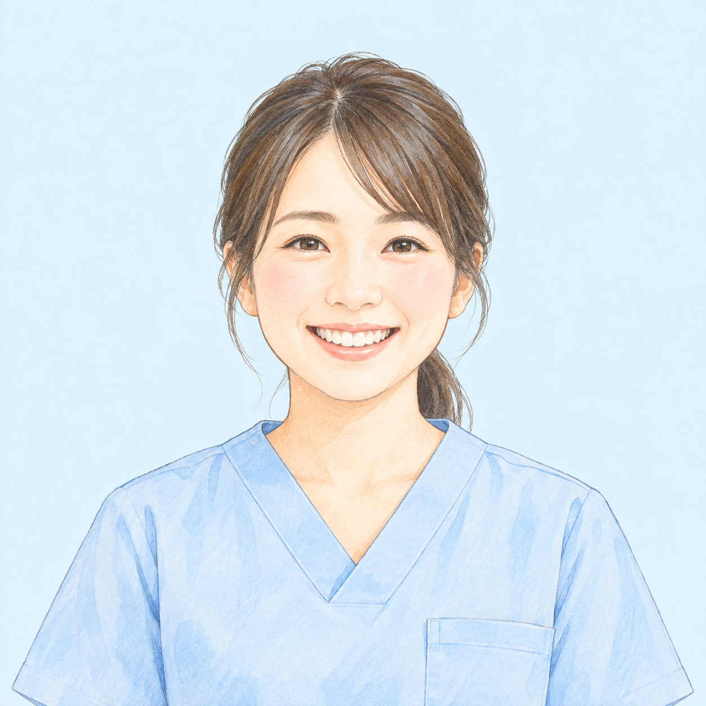
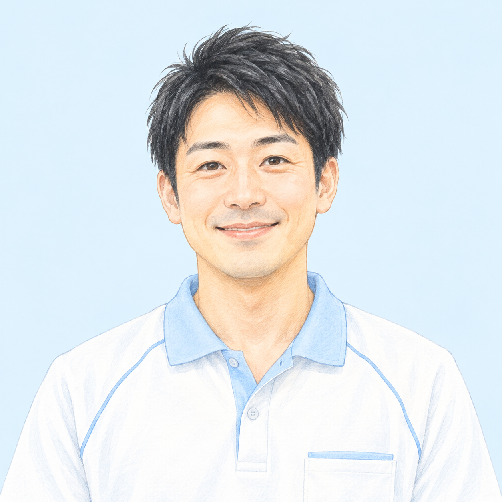

CARE MANAGERケアプラン鈴・鈴くるめ
ケアマネジャー
ご本人とご家族の想いを聞き、
暮らしに合う支えを一緒に考える。
どんなお仕事？ ＋
介護に関するご相談を受け、ケアプランの作成やサービス事業所との連絡・調整を担う仕事です。

BLOOM GROUP · KURUME / CHIKUGO
住み慣れた街で、自分らしく。
介護・看護・福祉を通して、暮らしに寄り添います。
ABOUT BLOOM
ご本人にも、ご家族にも。
大切にしたいのは、その人らしい毎日。
Bloomグループは、久留米・筑後の地域で、
ケアプランから介護・看護、住まい、福祉用具まで、
暮らしを支えるサービスをご案内しています。


OUR SERVICES
必要な支えを、必要なときに。
それぞれの専門性で、地域の毎日を支えます。
ケアプラン鈴・ケアプラン鈴くるめ
介護サービスの利用に関するご相談や、ケアプランの作成を通じて、ご本人とご家族の暮らしを支えます。
ケアプラン鈴に電話する 0944-78-1135 ↗百夢の森
久留米市三潴町にある、全22室の住宅型有料老人ホーム。入居やご見学、最新の空室状況は施設へお問い合わせください。
百夢の森に電話する 0942-64-8765 ↗ヘルパーステーションももゆめ
住み慣れたご自宅での生活を支える、訪問介護・障がい福祉サービスをご案内します。
お問い合わせ 070-5369-5152 ↗
訪問看護ステーションももゆめ
ご自宅で療養される方の暮らしに寄り添う訪問看護。ご利用については事業所へご相談ください。
お問い合わせ 080-7943-6213 ↗
ももゆめレンタルサービス
福祉用具の貸与・販売、住宅改修のご相談を通じて、ご自宅での暮らしを支えます。
お問い合わせ 0942-65-7888 ↗MEET OUR TEAM
仕事への想いも、人柄も。
Bloomの仲間を、少し身近に。
似顔絵・紹介内容は掲載サンプルです。

CARE MANAGERご本人とご家族の想いを聞き、
暮らしに合う支えを一緒に考える。
介護に関するご相談を受け、ケアプランの作成やサービス事業所との連絡・調整を担う仕事です。

NURSE住み慣れた場所での毎日に、
看護の専門性と、安心を届ける。
ご自宅で療養される方の健康状態を確認し、主治医や関係職種と連携しながら看護を行う仕事です。

CARE STAFFいつもの会話、小さな気づき。
その人らしい日常に寄り添う。
施設やご自宅で、身体介護や生活の支援を通じて、その方に合った日常生活をサポートする仕事です。
実際のスタッフの似顔絵・氏名・職種・メッセージに差し替えて掲載する想定です。
YOUR NEXT STEP
仕事のこと、暮らしとの両立、これからのこと。
あなたが大切にしたいことから、知ってください。
WORKING TOGETHERWORK STYLE
ケアプラン、介護、看護、福祉用具。
地域の暮らしを、さまざまな仕事が支えています。
ご本人の声、ご家族の想いを知ることから。
それぞれの専門性を活かして、支えを考える。
住み慣れた街での、その人らしい毎日のために。
WORK & LIFE
勤務条件・制度は職種や事業所によって異なります。
気になることを、採用相談でお聞かせください。
希望する勤務時間や雇用形態、夜勤の有無など。ご自身の暮らしと合わせて確認したいことをご相談ください。
休日の取り方、各種保険、手当など。対象職種・雇用形態ごとの条件をご案内します。
お持ちの資格やこれまでの経験、今後挑戦したいこと。業務内容や必要な資格と合わせてご相談ください。
FIND YOUR ROLE
職種から、仕事を知る。
現在の募集状況・条件はお問い合わせください。
ケアプランの作成・相談支援など
訪問看護・施設での看護など
施設介護・訪問介護など
資格の有無やご経験も含めてご相談ください
給与・勤務時間・休日などの募集条件は、確認後に職種別の募集要項として掲載します。
RECRUIT FAQ
お問い合わせの際に「採用について話を聞きたい」とお伝えください。希望する職種・事業所と合わせてご相談いただけます。
必要な資格や経験は職種によって異なります。お持ちの資格やこれまでのご経験をお伝えのうえ、ご希望の仕事についてご相談ください。
現在の募集状況と条件は各事業所にお問い合わせください。このデモでは、確認後に職種ごとの募集要項を掲載する構成を想定しています。
CONTACT
ご利用の相談・施設の見学・採用について、
お気軽にお問い合わせください。